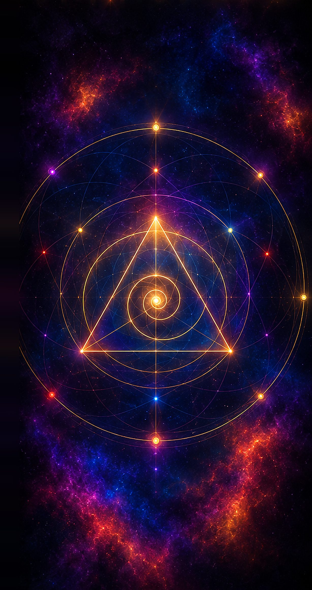

The Celestial Archipelago
The Celestial Archipelago is a cluster of floating islands suspended within the Astral Expanse, each island a fragment of a greater consciousness. These realms are not bound by time, space, or the laws of the material world. They serve as waystations, temples, markets, and battlegrounds — home to beings of light, shadow, and everything in between.
To reach the Archipelago is to step beyond the veil, where thought becomes form and dreams shape reality.

Key Locations
The Veiled Spires
Home to the Archivists and keepers of lost knowledge. A realm of endless libraries and shifting towers.
The Dreamer's Reach
A tranquil realm where thought manifests as landscape. Visions, prophecies, and memories coalesce here.
The Eternal Market
A hub of trade, culture, and interdimensional exchange. All paths, all peoples, all things.
The Forgotten Tomb
A fractured island of ancient ruins and sleeping powers. Not all that is forgotten should be found.
The islands are not places, they are states of being.The Archivists' LoreRead the root designA page with links, code, and raw HTML See every blockThe block reference in the Library